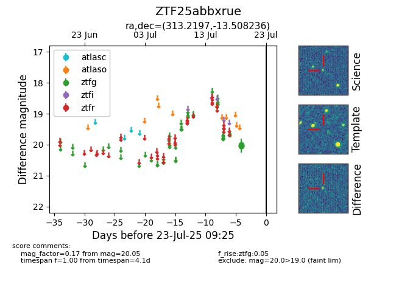

Target ZTF25abbxrue at 2025-07-23 12:37, see:
FINK: fink-portal.org/ZTF25abbxrue
Lasair: lasair-ztf.lsst.ac.uk/objects/ZTF25abbxrue
ALeRCE: alerce.online/object/ZTF25abbxrue
alt names
ZTF25abbxrue (ztf,fink)
coordinates:
equatorial (ra, dec) = (313.2197,-13.50824)
galactic (l, b) = (34.0385,-32.94940)
photometry
last ztfg=20.05
3 ztfg detections
